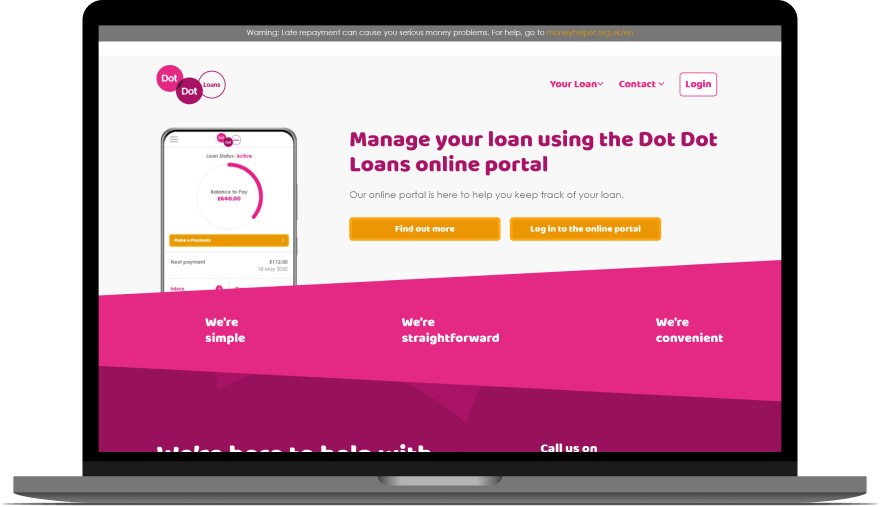

DDL - Various Integrated Features
A collection of UI and UX features created for the Dot Dot Loans product
Details
Scope:
Full-time work | Improvement on existing product
Role:
Concept | Research | UX & UI design
Tools:
Figma
DDL Library & Journey
Built out a Figma library and page-based journey with fleshed-out demos to represent the existing
website.
Building out the Figma library helped to maintain the consistency of visual elements across future
designs. It also allowed for much faster prototyping of and iteration on new features.
Recreating the customer journey allowed us to properly visualise and understand how users navigate
through the website, leading to more informed decisions about what features could be added, moved,
etc. This also served as a good visual guide to our journey for new team members, and aided with
training and onboarding.

Repayment Plan Tool
Designed the UI/UX for a “Repayment Plan Tool” that would be seamlessly integrated into our contact
form. Developed flow where user selects a query indicative of financial challenges i.e. “I am unable
to make a payment”. On selection, users are given the option to redirect to the Repayment Plan Tool.
This tool acted as an early intervention mechanism for users facing such difficulties and allowed
them to independently access help even when a customer service agent was unavailable.
Maintenance
Conducted comprehensive maintenance on the DDL main website and customer portal, prioritising
user-centric design and addressing key usability concerns.
Notable enhancements include:
• Implementation of collapsible sections on the Terms & Conditions page for improved
readability.
• Introduction of a dedicated “Money Worries” page and tab to assist financially unstable
customers.
• Addition of “Add to Homescreen” notices within the portal to encourage users to bookmark
the site on their mobile devices.
These maintenance enhancements strengthened trust in the brand by demonstrating continuous
commitment to customers wellbeing and the implementation of their feedback.
For a more in-depth look at these features, please view the full prototype.
 View Prototypes